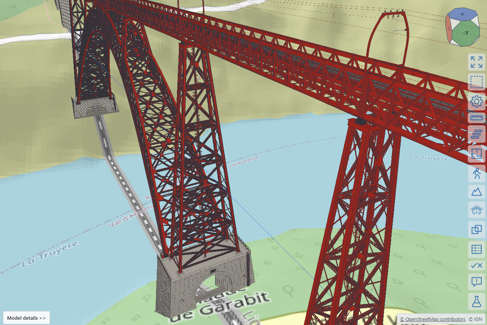
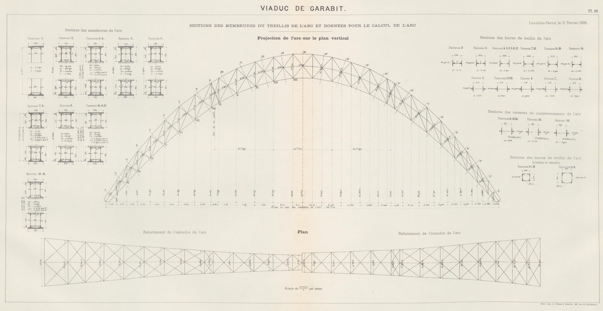

The Garabit viaduct, rebuilt from Eiffel's drawings
The Garabit viaduct carries the railway from Béziers to Neussargues 122 m above the Truyère. Gustave Eiffel's company built it from 1880 to 1884: a crescent arch of 165 m, five iron piers, three lattice decks and two masonry approach viaducts, 565 m in all. Eiffel published the complete design in 1889, with 19 plates of drawings and every calculation. All of it is in the public domain.
This page shows a federated IFC 4.3 model of the viaduct that was built from those sources alone, by Claude Code (model Fable 5.1) working with xeoIFC. The request was a model "as realistic as possible": foundations, rivets and details, an IfcAlignment with real clothoids, swept cross sections instead of meshes, georeferenced so that the terrain of the viewer fits, and only sources that may be published.
1. The model
This is xeoIFC Web with the five main files and three rivet files of the federation and the French national terrain (IGN RGE ALTI) around them. Rotate, zoom and pan with the mouse, click a rivet line, a lattice bar or a dressed stone to see what it is and where its dimensions come from.

| Files | IFC4X3_ADD2, 9 federated files and one combined file, 208 MB (28.3 MB zipped including rivets, without the terrain) |
|---|---|
| Railway | IfcAlignment fitted to the IGN LiDAR HD survey: straight, circular arcs and clothoids in plan (4.7 cm RMS on the viaduct), vertical curves, cant; rails and guard rails swept along the alignment; 1,134 sleepers on linear placements; the track supports of the metal deck; 1500 V DC overhead line on the arched portals of the deck |
| Ironwork | 5 piers with their horizontal bracing and ladders, the arch with its two palées, 3 decks: 33,000 plates, angles and lattice bars, 26 deck bearings, 4 arch hinges on cast bearings tied down by anchor rods to the galleries in the pier masonry |
| Rivets | 678,768, the published number, in 27,000 riveted joints (separate files) |
| Masonry | Approach viaducts, abutments, pier bases with the arched tunnels and anchorage galleries of piers 4 and 5, foundations: 20,409 m³ as in the memoir, 9,065 dressed stones |
| Georeference | RGF93 / Lambert-93 (EPSG:2154) with NGF-IGN69 heights, IfcMapConversionScaled |
2. The sources

| Source | Used for | Rights |
|---|---|---|
| G. Eiffel, Mémoire présenté à l'appui du projet définitif du viaduc de Garabit, 1889, with plates 1-19 | all geometry and sections, masses and masonry volumes by part, the rivet count | public domain |
| IGN LiDAR HD 2025 | alignment fit, rail level, pier positions, ground line | Licence Ouverte 2.0 (IGN) |
| IGN RGE ALTI, BD TOPO | terrain in the viewer and in the terrain file, first alignment guess | Licence Ouverte 2.0 (IGN) |
| SNCF Réseau, AFGC 2024 | facts on today's track and repairs | facts only |
3. How it is made
The model is generated by garabit-gen, a small Rust program on the xeoIFC STEP writer, in about two seconds.
It holds every number with its source: dimensions read from the plates, sections from the memoir's tables, positions
measured in the LiDAR survey. Where the drawings are silent (gusset plates, rivet rows, foundation depths, the modern
track) it applies period detailing rules and calibrates to the memoir: the extra flange plates of the deck chords
follow the bending moments of the continuous girder, computed as Eiffel did, the foundation depths are solved so that
each masonry part has its published volume, and the rivet pitch so that the viaduct has exactly 678,768 rivets.
Members are cut to fit where they meet (bars cut along the chords, angles coped where they straddle a web, gussets
bent onto the flanges) and an interference check confirms that no two parts of the ironwork overlap.
Every element says where it comes from in the property set Garabit_Provenance: Documented (taken
from the drawings), Scaled from plate, Measured (LiDAR) or Representative (detailing rules), with
the plate or table as the source.
| Part | Model | Memoir |
|---|---|---|
| Piers 1 to 5 (iron, t) | 51.1 / 78.6 / 111.0 / 149.6 / 149.6 | 61.0 / 87.7 / 126.4 / 169.4 / 169.2 |
| Decks Neussargues / central / Marvejols (t) | 313.3 / 186.4 / 810.2 | 330.0 / 197.3 / 836.8 |
| Arch (t) | 872.9 | 1,073.0 |
| Masonry (m³) | 20,409 | 20,409 |
| Rivets | 678,768 | 678,768 |
The arch is lighter than Eiffel's tonnage because the model uses only the member sections drawn on plates 2 and 10; the connection plates, splices and fillers that make up the difference are not drawn.
4. Files and licence
Download the IFCZIP files individually:
Main model files
- Railway — garabit-00-railway.ifczip
- Masonry — garabit-10-masonry.ifczip
- Arch — garabit-20-arch.ifczip
- Piers — garabit-21-piers.ifczip
- Decks — garabit-22-deck.ifczip
Rivet files
- Pier rivets — garabit-40-rivets-piers.ifczip
- Arch rivets — garabit-41-rivets-arch.ifczip
- Deck rivets — garabit-42-rivets-deck.ifczip
All eight files are listed in garabit-showcase.federation.json and load in the viewer above. The separate terrain IFC is not loaded here; the viewer uses IGN terrain instead.
The model is offered under CC BY 4.0. Please credit "Viaduc de Garabit model: xeoFoundry, from G. Eiffel (1889) and IGN LiDAR HD / RGE ALTI (Licence Ouverte 2.0)".